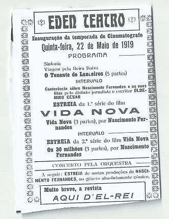
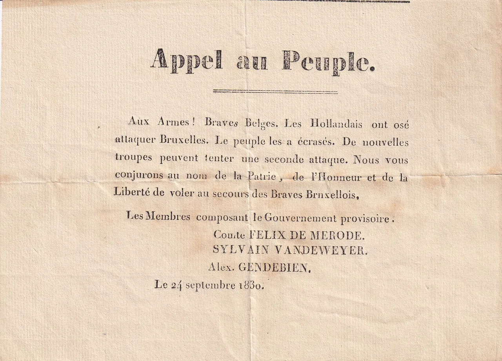

Doblada en cuatro dentro del bolsillo del overol o arrojada desde la terraza de un edificio hacia la multitud que corre, una hoja suelta de papel barato ha sido la forma más limpia y feroz de poner un pensamiento a circular en América Latina. Una indagación sobre la hoja volante, el panfleto y la desobediencia tipográfica de acera.
Antes de que existieran los libros impresos encuadernados en piel con cantos dorados para las bibliotecas de los conventos y de los palacios virreinales, existió la hoja suelta: un pedazo humilde de papel de estraza o de trapo que no tenía tapas protectoras ni pretensión de inmortalidad, pero que poseía la virtud inestimable de poder volar con el viento y pasar de mano en mano en el zoco del mercado sin dejar rastro de su origen. Los historiadores del libro han demostrado que las grandes revoluciones de la modernidad no se gestaron en los voluminosos tratados de teología o de jurisprudencia que reposaban en los anaqueles académicos, sino en los panfletos de bolsillo, en las hojas volantes clandestinas que los tipógrafos herejes imprimían de noche en imprentas clandestinas para ser leídas al alba por los artesanos y los jornaleros.

En América Latina la hoja volante —llamada según la región y la época pasquín, bando sedicioso, folleto suelto o panfleto— fue la primera trinchera de la palabra libre frente al monopolio inquisitorial de la corona española. Cuando la imprenta formal estaba férreamente controlada por los virreyes y los obispos, quienes exigían licencias eclesiásticas previas para cualquier texto que circulara en el territorio, los patriotas criollos y los comuneros mestizos encontraron en la hoja suelta la única forma de avisar a los pueblos que el rey de España estaba preso y que la hora de la independencia había llegado.
La materialidad del panfleto está regida por dos imperativos ineludibles: la liviandad y la velocidad. El libro es un objeto pesado, aristocrático, que exige una mesa limpia, una lámpara quieta y horas de ocio sedentario para ser degustado en soledad; el panfleto, en cambio, es un objeto nómada, proletario, diseñado para ser leído de pie en la esquina de la fábrica, para ser escondido en el forro de una bota militar o para ser arrugado en el puño y arrojado a una alcantarilla cuando se aproxima la patrulla de la policía secreta.
Durante las dictaduras del siglo veinte en el Cono Sur y en Centroamérica, cuando las imprentas sindicales eran allanadas por los tanques del ejército y los periodistas críticos eran arrojados al mar o fusilados en los estadios, la hoja volante se convirtió en el único hilo de aire que mantenía con vida la memoria democrática. Se utilizaban máquinas de escribir portátiles Remington con las cintas de tinta gastadas, picando las letras con tal fuerza sobre un esténcil encerado que las teclas atravesaban el papel; luego, en mimeógrafos de manivela escondidos en sótanos húmedos, se imprimían miles de pliegos con tinta de olor penetrante que manchaba los dedos de negro.
El reparto del volante era en sí mismo una coreografía de audacia y solidaridad barrial. Estaba el reparto mano a mano en la boca de las estaciones de tren, donde un militante fingía leer el diario mientras deslizaba los panfletos bajo el brazo de los obreros que subían a los vagones; estaba el volante paloma, que consistía en colocar un fajo de hojas sobre un retardo de fósforos en la terraza de un edificio céntrico para que, al consumirse el fósforo, las hojas salieran disparadas por el viento sobre la avenida peatonal en una lluvia blanca de consignas que la policía tardaba horas en recoger.

Pero la gloria de la hoja volante no se reduce al combate político directo: vive también en la poesía de cordel del nordeste brasileño, en las calaveras satíricas que José Guadalupe Posada grababa en plomo sobre papel periódico verde y morado en México, y en las canciones populares que los ciegos cantaban en las ferias de pueblo vendiendo la letra en hojas sueltas por un puñado de centavos. La hoja volante era el periódico de los que no tenían radio, el libro de versos de los que no podían pagar una librería y el cancionero de los que solo tenían su garganta para cantar.
Hoy en día, cuando los profetas del capitalismo cibernético anuncian la muerte definitiva del papel y nos conminan a encerrar toda nuestra existencia en aplicaciones corporativas que censuran las publicaciones con algoritmos invisibles y entregan nuestros datos personales a los departamentos de inteligencia de las grandes potencias, el panfleto de papel recupera una vigencia luminosa. Una hoja volante impresa en un taller de barrio no deja huella digital, no puede ser hackeada por un satélite ni apagada por un tribunal supremo; sigue siendo la palabra directa, física y limpia de un ser humano que se entrega en las manos de otro ser humano en mitad de la calle.
Allí, en ese trozo arrugado de celulosa que un joven reparte hoy en una protesta y que un abuelo guarda en el bolsillo de su saco viejo, late la más antigua y noble tradición de la cultura letrada popular: la certeza de que la libertad no necesita de pantallas resplandecientes para incendiar el pensamiento, sino de una simple hoja de papel que se atreva a volar contra el viento.
Fuentes.
- Darnton, Robert (1982). The Literary Underground of the Old Regime. Harvard University Press.
- Rama, Ángel (1984). La ciudad letrada: Las formas de la desobediencia popular. Ediciones del Norte.
- Habermas, Jürgen (1962). Historia y crítica de la opinión pública: La esfera pública plebeya. Gustavo Gili.
Investigación sobre historia de la prensa clandestina, panfletaria y publicaciones de combate en América Latina.
Fuentes consultadas el 19.11.2026. Análisis e interpretación: RUMMOR. Edición privada para revisión.